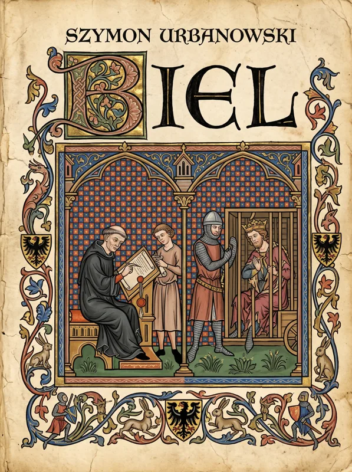

interaktywna mapa do powieści Szymona Urbanowskiego

Wrocław i Śląsk
jesień 1293 – wiosna 1294
Szymon Urbanowski
interaktywna mapa do powieści
Ta strona towarzyszy lekturze. Każda scena książki ma tu swoje miejsce na mapach autora i swój dzień w ówczesnym kalendarzu. Najlepiej mieć ją otwartą obok książki i zaglądać po każdym rozdziale.
Mapa. Czarne znaczniki to miejsca scen, liczba mówi, ile ich tam było. Przy przybliżaniu Śląsk przechodzi we Wrocław, Wrocław w miasto w murach, a miasto w Ostrów Tumski. Plany opactw i Głuszycy są pod przyciskami u góry.
Oś czasu. Na dole sceny ułożone dzień po dniu, z najważniejszymi świętami. Strzałki ‹ › albo klawisze ← → przechodzą scena po scenie.
Karty. Streszczenie sceny, kto w niej jest, opisy miejsc i postaci z książki oraz słowniczek dawnych słów. Słowa podkreślone kropkami objaśniają się po najechaniu albo stuknięciu.
Bez spoilerów. Mapa pokazuje tylko to, co już przeczytano. Dalsze sceny, imiona, a nawet nazwy miejsc zostają zabielone, dopóki lektura do nich nie dojdzie.
Tę stronę otwiera znowu tytuł „Biel” w nagłówku.